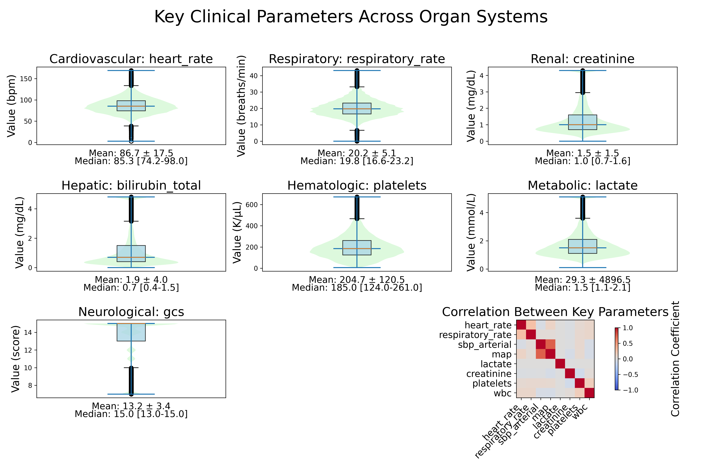
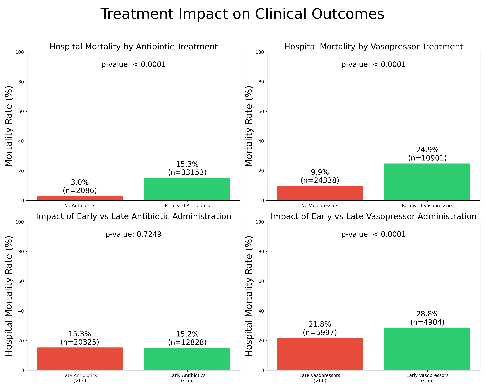
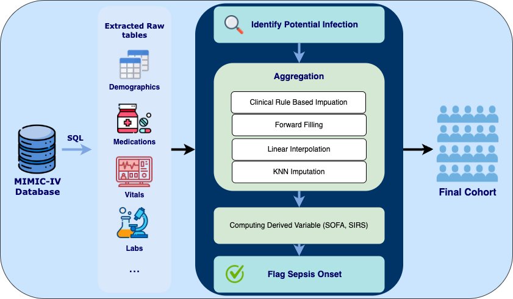

A transparent, reproducible pipeline and benchmark framework for sepsis prediction using 35,239 ICU patients from MIMIC-IV.
IEEE-EMBS International Conference on Biomedical and Health Informatics 2025
A comprehensive sepsis cohort with rich clinical variables, treatment data, and multiple outcome labels.
Mean age 65.4 ± 16.3 years · 44.5% female · Median Charlson Index 5.0 [IQR 3.0–7.0]
14.5% hospital mortality · 25.1% 90-day mortality · 12.4% septic shock · 7.3% readmission rate
35.1% mechanically ventilated · 16.9% vasopressors · 66.3% received antibiotics

Sepsis causes 48.9 million cases and 11 million deaths annually. Existing ML research faces key challenges.
Most studies rely on MIMIC-III, which may not reflect current ICU practices and treatment protocols.
Ad-hoc, poorly documented data curation makes results difficult to reproduce and compare across studies.
Vasopressors, fluids, and antibiotics are frequently overlooked despite their critical influence on outcomes.

A four-stage, fully reproducible pipeline transforms raw MIMIC-IV data into model-ready trajectories.
SQL queries extract vitals, labs, medications, fluids, and cultures from PostgreSQL
Merge records, resolve IDs, identify infection onset via Sepsis-3 criteria
Build 4h-interval time series with SOFA, SIRS, P/F ratio, and shock flags
Train Linear, LSTM, and Transformer models across 4 clinical tasks

Infection onset is the earliest timepoint where antibiotic administration occurs within 24h before a positive culture, or a culture is obtained within 72h before antibiotic administration. Sepsis is defined as SOFA score increase ≥ 2 from baseline in the presence of infection. Septic shock requires fluid resuscitation ≥ 2000 mL in prior 12h, MAP < 65 mmHg, vasopressor requirement, and lactate > 2 mmol/L.
Heart rate, blood pressure (systolic, diastolic, mean), respiratory rate, SpO2, temperature, ventilator parameters
Electrolytes, coagulation panel, blood gases, cardiac markers, liver/renal function, CBC
Vasopressors (norepinephrine-equivalent), IV fluids (tonicity-corrected), antibiotics, mechanical ventilation
SOFA (6 organ systems), SIRS, P/F ratio, shock index, Charlson Comorbidity Index
Four predictive tasks reflecting real-world challenges in sepsis care.
Using only the first 6 hours of the sepsis trajectory:
| Task | Type | Description | Metrics |
|---|---|---|---|
| In-Hospital Mortality | Classification | Predict survival to discharge | AUROC, AUPRC |
| Length of Stay | Regression | Predict ICU length of stay (days) | RMSE, MAE |
At each timestep, observe previous 6h to predict events within next 24h:
| Task | Type | Description | Metrics |
|---|---|---|---|
| Vasopressor Requirement | Classification | Predict vasopressor need in next 24h | AUROC, AUPRC |
| Septic Shock | Classification | Predict shock onset within next 24h | AUROC, AUPRC |
Transformers consistently outperform baselines. Treatment variables are critical for dynamic tasks.
| Task | Metric | Linear | LSTM | Transformer |
|---|---|---|---|---|
| IHM | AUROC | 0.845 | 0.838 | 0.863 |
| IHM | AUPRC | 0.512 | 0.507 | 0.550 |
| LOS | RMSE | 13.22 | 5.23 | 5.12 |
| LOS | MAE | 3.10 | 2.85 | 2.81 |
| SS | AUROC | 0.881 | 0.885 | 0.925 |
| SS | AUPRC | 0.497 | 0.580 | 0.705 |
| VR | AUROC | 0.924 | 0.911 | 0.927 |
| VR | AUPRC | 0.892 | 0.870 | 0.903 |
| Task | Metric | Linear | LSTM | Transformer |
|---|---|---|---|---|
| IHM | AUROC | 0.844 | 0.825 | 0.864 |
| IHM | AUPRC | 0.512 | 0.487 | 0.560 |
| LOS | RMSE | 13.81 | 5.31 | 5.18 |
| LOS | MAE | 3.14 | 2.86 | 2.70 |
| SS | AUROC | 0.876 | 0.879 | 0.919 |
| SS | AUPRC | 0.489 | 0.501 | 0.672 |
| VR | AUROC | 0.823 | 0.779 | 0.810 |
| VR | AUPRC | 0.697 | 0.635 | 0.687 |
Flattens 3D temporal data (N, T, X) to 2D (N, T×X) and applies scikit-learn models: LogisticRegression for classification, Ridge/Lasso/ElasticNet for regression.
Two-layer PyTorch LSTM with hidden dimension 64, dropout 0.1, and Adam optimizer. Uses the final hidden state for prediction.
Multi-layer encoder with 8 self-attention heads, 2 layers, sine/cosine positional encoding, dropout 0.1, and Adam optimizer.
Requires credentialed access to MIMIC-IV and a local PostgreSQL database. See the README for full setup instructions.
Single-institution derivation (Beth Israel Deaconess Medical Center) may affect generalizability. Retrospective EHR data is subject to documentation inconsistencies. Only Sepsis-3 criteria implemented; newer scoring tools (qSOFA) not yet integrated.
Reinforcement learning for treatment personalization. Incorporation of unstructured clinical notes (discharge summaries, progress notes). Multimodal modeling combining structured EHR data with free text.